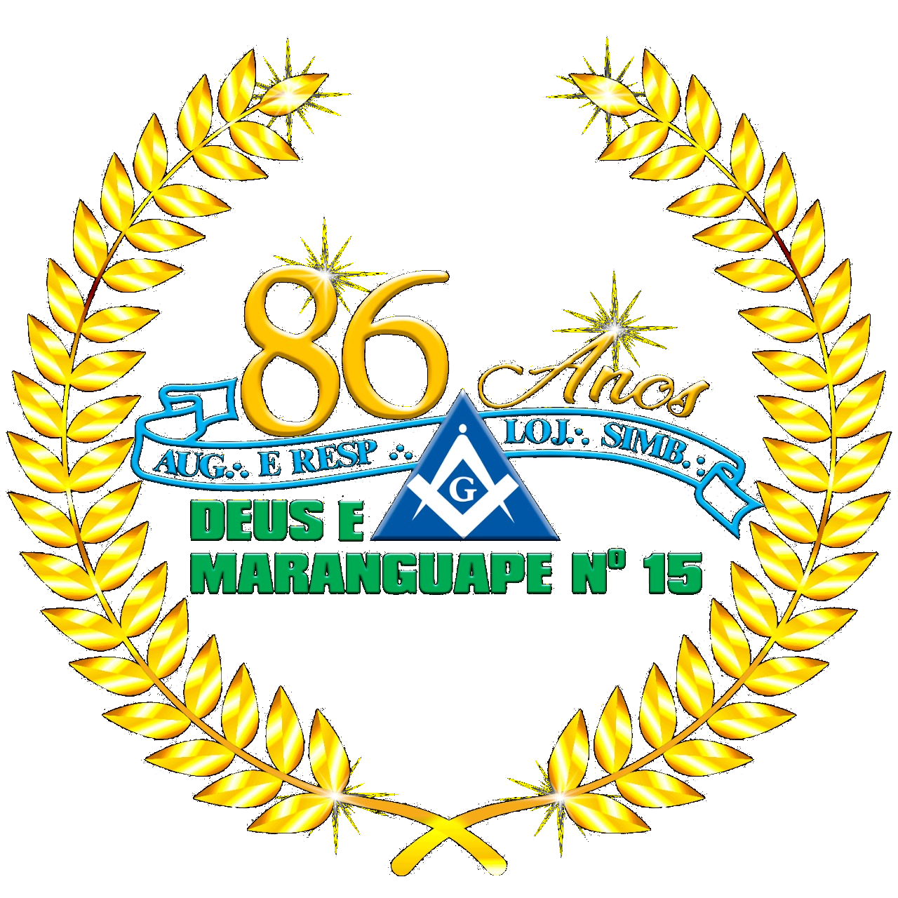

 Lojas Co-irmãs À G∴D∴G∴A∴D∴U∴ Lista das Lojas da Circunscrição da GLMECE Número Nome Dia 1 A∴R∴L∴S∴ Deus e Camocim Terça 2 A∴R∴L∴S∴ Porangaba Sexta 3 A∴R∴L∴S∴ Fortaleza Segunda 4 A∴R∴L∴S∴ Deus e Fraternidade Terça 6 A∴R∴L∴S∴ Deus e Baturité Terça 7 A∴R∴L∴S∴ Nova Cruzada do Norte Quinta 8 A∴R∴L∴S∴ Deus e União Terça 9 A∴R∴L∴S∴ Deus e Caridade Quarta 10 A∴R∴L∴S∴ Deus e Liberdade Terça 11 A∴R∴L∴S∴ Deus e Justiça Terça 12 A∴R∴L∴S∴ LIberdade V Terça 13 A∴R∴L∴S∴ Deus e Harmonia Quarta 14 A∴R∴L∴S∴ Deus e Humanidade Segunda 15 A∴R∴L∴S∴ Deus e Maranguape Quarta 16 A∴R∴L∴S∴ Fraternidade Jaguaribana Terça 17 A∴R∴L∴S∴ Deus e Fraternidade Sobralense Sexta 18 A∴R∴L∴S∴ Obediência e Justiça Terça 19 A∴R∴L∴S∴ Franklin Roosevelt Quinta 20 A∴R∴L∴S∴ Deus e Crateús Quinta 21 A∴R∴L∴S∴ Cavalheiors da Liberdade Quinta 22 A∴R∴L∴S∴ Ignácio Lôlo Quarta 23 A∴R∴L∴S∴ Luz da Independência Quarta 24 A∴R∴L∴S∴ Obreiros da Paz Terça 25 A∴R∴L∴S∴ Benjamin Constant Terça 26 A∴R∴L∴S∴ Raimundo Teixeira Lima Quarta 27 A∴R∴L∴S∴ São João do Príncipe Quinta 28 A∴R∴L∴S∴ Professor Euclides César Terça 29 A∴R∴L∴S∴ Luz da Ibiapaba Quinta 30 A∴R∴L∴S∴ União e Progresso Quarta 31 A∴R∴L∴S∴ Deus, Paz e Amor Quarta 32 A∴R∴L∴S∴ Deus e Harmonia II Sexta 33 A∴R∴L∴S∴ Vigilantes da Luz Quarta 34 A∴R∴L∴S∴ Luz da Restauração Quarta 35 A∴R∴L∴S∴ Construtores da Fraternidade Quinta 36 A∴R∴L∴S∴ Abolição 2 de fevereiro Quinta 37 A∴R∴L∴S∴ Mario Behring Quarta 38 A∴R∴L∴S∴ Cavalheiros da Paz Terça 39 A∴R∴L∴S∴ Luz do Acarau Quarta 40 A∴R∴L∴S∴ Acácia do Cariri Sábado 41 A∴R∴L∴S∴ Harmonia Varzealegrense Quinta 42 A∴R∴L∴S∴ Castro Alves Terça 43 A∴R∴L∴S∴ Acácia Sertaneja Quinta 44 A∴R∴L∴S∴ Obreiros do Novo Século Quinta 45 A∴R∴L∴S∴ Deus e Milagres Quinta 46 A∴R∴L∴S∴ União e LIberdade Oroense Quarta 47 A∴R∴L∴S∴ União Maçônica Campossalense Quarta 48 A∴R∴L∴S∴ Fraternidade e Justiça Terça 49 A∴R∴L∴S∴ Deus e Ipaumirim Quinta 50 A∴R∴L∴S∴ Acácia Alencarina Segunda 51 A∴R∴L∴S∴ Acácia do Vale Quinta 52 A∴R∴L∴S∴ Henrique Ellery Terça 53 A∴R∴L∴S∴ Tiradentes Sexta 54 A∴R∴L∴S∴ Aurora Aracatiense Sexta 55 A∴R∴L∴S∴ Paulo Elpídio Segunda 56 A∴R∴L∴S∴ 21 de Abril Terça 57 A∴R∴L∴S∴ Mestre Matheus Coutinho Quinta 58 A∴R∴L∴S∴ Luz e Fortaleza Quarta 59 A∴R∴L∴S∴ Cavalheiros da Harmonia Quinta 60 A∴R∴L∴S∴ Cavalheiros da Arte Real Quinta 61 A∴R∴L∴S∴ José de Sousa Medeiros Sexta 62 A∴R∴L∴S∴ Redenção Cearense Sexta 63 A∴R∴L∴S∴ Fraternidade Caucaiense Quinta 64 A∴R∴L∴S∴ N.E.C.T.A.R. Segunda 65 A∴R∴L∴S∴ Álvaro Weyne Segunda 66 A∴R∴L∴S∴ Fraternindade Milhãense Sexta 67 A∴R∴L∴S∴ José Guedes Filho Terça 68 A∴R∴L∴S∴ 15 de Novembro Sexta 69 A∴R∴L∴S∴ Cavalheiros da NOva Aurora Terça 70 A∴R∴L∴S∴ Luzes do Horizonte Terça 71 A∴R∴L∴S∴ Acácia 20 de Agosto Segunda 72 A∴R∴L∴S∴ Francisco Dias da Rocha Terça 73 A∴R∴L∴S∴ Paz e Fraternidade Catarinense Terça 74 A∴R∴L∴S∴ Obreiros da União Segunda 75 A∴R∴L∴S∴ Deus e Independência Manoel Messias Terça 76 A∴R∴L∴S∴ Segredo e Força da Acácia Segunda 77 A∴R∴L∴S∴ Portal da Fraternidade Canindeense Quarta 78 A∴R∴L∴S∴ Deus e Maracanaú Quinta 79 A∴R∴L∴S∴ Cavaleiros da Aurora Terça 80 A∴R∴L∴S∴ Evolução e Trabalho Segunda 81 A∴R∴L∴S∴ Deus e Pacajus Quarta 82 A∴R∴L∴S∴ Igualdade Quarta 83 A∴R∴L∴S∴ Nova Cruzada do Norte Quinta 84 A∴R∴L∴S∴ Deus e Amor Quarta 85 A∴R∴L∴S∴ Cavalheiros Spartanos Quinta 86 A∴R∴L∴S∴ Evolução Nordestina 87 A∴R∴L∴S∴ Deus, Caridade e Família Terça 88 A∴R∴L∴S∴ Viana de Carvalho Quarta 89 A∴R∴L∴S∴ Gonçalves Ledo Sexta 90 A∴R∴L∴S∴ Renascença do Cariri Segunda 91 A∴R∴L∴S∴ Major Batista Torres de Melo Terça 92 A∴R∴L∴S∴ Padre Mororó Quarta 93 A∴R∴L∴S∴ Defensores da Ordem Quarta 94 A∴R∴L∴S∴ de Messejana - José de Alencar Sexta 95 A∴R∴L∴S∴ Dr. Manoel Carlos de Gouveia Quinta 96 A∴R∴L∴S∴ Deus e Família Taboense Quarta 97 A∴R∴L∴S∴ Caravaneiros da Fraternidade Quarta 98 A∴R∴L∴S∴ José Roque Bezerra Quarta 99 A∴R∴L∴S∴ Cavaleiros do Cruzeiro do Sul Segunda 100 A∴R∴L∴S∴ Adolfo Bezerra de Menzes Quarta 101 A∴R∴L∴S∴ Acácia Ibiapabana Terça 102 A∴R∴L∴S∴ Arquiteto da Paz Terça 103 A∴R∴L∴S∴ Liberdade e Justiça Quarta 104 A∴R∴L∴S∴ Acácia e Fraternidade Granjense Segunda 105 A∴R∴L∴S∴ Vale do Hermon Segunda 106 A∴R∴L∴S∴ 107 A∴R∴L∴S∴ SEguidores da Arte Real Sexta 108 A∴R∴L∴S∴ Deus e Fraternidade de Paracuru Terça 109 A∴R∴L∴S∴ Luz do Oriente Sexta 110 A∴R∴L∴S∴ Deus e Anacetaba Sexta 111 A∴R∴L∴S∴ Cavaleiros de York Terça 112 A∴R∴L∴S∴ NECTAR do Cariri Terça 113 A∴R∴L∴S∴ Rei Salomão Segunda 114 A∴R∴L∴S∴ Fonte de Luz Quinta 115 A∴R∴L∴S∴ Experiência e Sabedoria Quinta 116 A∴R∴L∴S∴ Acácia, Deus e Independência Terça 117 A∴R∴L∴S∴ Bezerra de Menezes Segunda 118 A∴R∴L∴S∴ Aurora Cearense Quinta 119 A∴R∴L∴S∴ Cid Peixoto do Amaral Sexta 120 A∴R∴L∴S∴ Caminho da Luz Terça 121 A∴R∴L∴S∴ João César Segunda 122 A∴R∴L∴S∴ Dragão do Mar Quarta 123 A∴R∴L∴S∴ União Fraterna Pereirense Quarta 124 A∴R∴L∴S∴ Germano Machado Holanda Sábado 125 A∴R∴L∴S∴ Cavaleiros Templários Segunda 126 A∴R∴L∴S∴ Aurora do Novo Tempo Quinta 127 A∴R∴L∴S∴ Luz do 3º Milênio Quarta 128 A∴R∴L∴S∴ Renascer da Luz Terça 129 A∴R∴L∴S∴ Luz de Belém Quinta 130 A∴R∴L∴S∴ Perfeita Liberdade Terça 131 A∴R∴L∴S∴ Deus e Fraternidade Martinopolense Quarta 132 A∴R∴L∴S∴ Guardiões da Luz Sexta 134 A∴R∴L∴S∴ Portal da Liberdade Quarta 135 A∴R∴L∴S∴ Acácia do Vale do Curu Segunda 136 A∴R∴L∴S∴ Cristo Redentor Quinta 137 A∴R∴L∴S∴ Deus e Família Terça 139 A∴R∴L∴S∴ Fraternidade Ibiapinense Segunda 140 A∴R∴L∴S∴ Luzes da Sabedoria Segunda 141 A∴R∴L∴S∴ José Rodrigues dos Santos Quarta 142 A∴R∴L∴S∴ Tristão Gonçalves Sexta 143 A∴R∴L∴S∴ União, Paz e Liberdade Hidrolandeses Sexta 144 A∴R∴L∴S∴ Luiz Gonzaga Quinta 145 A∴R∴L∴S∴ Bárbara de Alencar Terça 146 A∴R∴L∴S∴ Vigilantes do Monte Carmelo Sexta 147 A∴R∴L∴S∴ Operários da Arte Real de Pentecoste Quinta 148 A∴R∴L∴S∴ Acácia 20 de Agosto - Conjunto Ceará Quarta 149 A∴R∴L∴S∴ Cavaleiros da Luz Quarta 150 A∴R∴L∴S∴ Segredo e Força da Acácia Terça 151 A∴R∴L∴S∴ Guardiões de Órion Terça 152 A∴R∴L∴S∴ Templários da Ibiapaba Terça 153 A∴R∴L∴S∴ Niva Redentora Iguatuense Segunda 155 A∴R∴L∴S∴ Etevaldo Barcelos Fontenele Segunda 156 A∴R∴L∴S∴ Deus e Fraternindade Santanense Quinta 157 A∴R∴L∴S∴ União e Fraternindade do Eusébio Terça 158 A∴R∴L∴S∴ Construtores do Amanhã Terça 159 A∴R∴L∴S∴ Thomas Smith Webb Quinta 160 A∴R∴L∴S∴ Cavaleiros de Aço Terça 161 A∴R∴L∴S∴ Verdade e Justiça Segunda 162 A∴R∴L∴S∴ Libertação dos Escravos Quinta 163 A∴R∴L∴S∴ Deus e Sabedoria Quarta